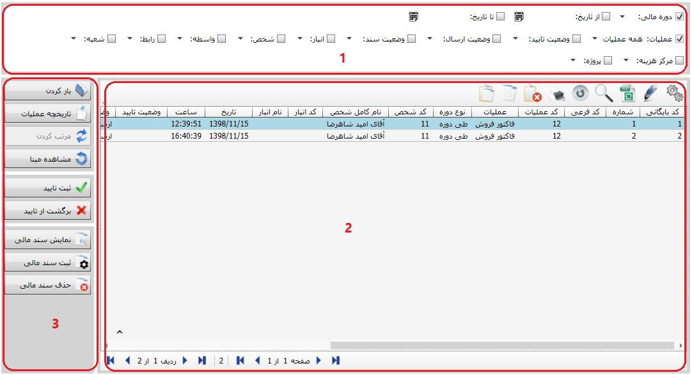
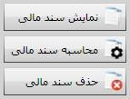

تمام اسناد صادره شده از سیستم خرید و فروش در صفحه «بایگانی و مدیریت اسناد خرید و فروش» بایگانی می شود، با انتخاب این گزینه از منوی «عملیات روزانه و بایگانی اسناد» شکل زیر نمایش داده می شود:
شکل بالا صفحه «بایگانی و مدیریت اسناد خرید و فروش» را نشان می دهد. همان طور که مشاهده می کنید این صفحه نیز از سه بخش تشکیل شده است که که در ادامه به ویژگی ها و کاربرد هر یک اشاره می کنیم:
1. در قسمت شماره 1 فیلتر هایی قرار داده شده است که با استفاده از آن ها می توانید اسناد خرید و فروش بایگانی شده را فیلتر نمایید. شما می توانید دوره مالی مورد نظرتان را تعیین کنید و اسناد مربوط به آن دوره مالی را در جدول شماره 2 مشاهده کنید یا با استفاده از فیلتر تاریخ، بازه زمانی دلخواه تعیین کنید تا اسناد مربوط به بازه زمانی مورد نظر نمایش داده شود. با استفاده از فیلتر عملیات می توانید اسناد موجود در جدول شماره 2 را بر اساس نام عملیات تفکیک کنید. همچنین توسط فیلتر های وضعیت تایید، وضعیت ارسال و وضعیت سند (حسابداری) اسناد را فیلتر نمایید.
2. کادر شماره 2 در شکل بالا لیست اسناد خرید و فروش را بر اساس فیلتری که در کادر شماره 1 تعیین کردید نمایش می دهد. در این جدول می توانید بسیاری از مشخصات اسناد را از جمله کد بایگانی، شماره، نام عملیات، تاریخ و ساعت صدور سند، نام شخص، انبار، نحوه تسویه، نام ثبت کننده و ... مشاهده کنید. با کلیک دوبل روی هر ردیف سند خرید و فروش مربوط به آن باز می شود و می توانید از امکانات فرم صدور سند نیز استفاده نمایید. همچنین با استفاده از ابزار موجود در بالای جدول می توانید از لیست اسناد خروجی اکسل بگیرید، اسناد مورد نظرتان را حذف کنید و ...
3. صفحه «بایگانی و مدیریت اسناد خرید و فروش» نیز مانند سایر صفحات بایگانی در نرم افزار، دارای ابزاری است که به کمک آن ها می توانید عملیاتی را روی اسناد انجام دهید. در ادامه به توضیح هر یک از این ابزار می پردازیم:
 : با انتخاب هر ردیف در لیست اسناد خرید و فروش و کلیک کردن روی این گزینه می توانید سند مربوط به آن ردیف را مشاهده کنید و در صورتی که سند تایید شده نباشد آن را ویرایش یا حذف نمایید.
: با انتخاب هر ردیف در لیست اسناد خرید و فروش و کلیک کردن روی این گزینه می توانید سند مربوط به آن ردیف را مشاهده کنید و در صورتی که سند تایید شده نباشد آن را ویرایش یا حذف نمایید.
 : با انتخاب یک سند و کلیک روی این گزینه می توانید کلیه عملیاتی که روی سند مورد نظر اعمال شده است را به همراه تاریخ و ساعت و نام کاربر مشاهده کنید. شکل زیر صفحه «تاریخچه عملیات» را نمایش می دهد:
: با انتخاب یک سند و کلیک روی این گزینه می توانید کلیه عملیاتی که روی سند مورد نظر اعمال شده است را به همراه تاریخ و ساعت و نام کاربر مشاهده کنید. شکل زیر صفحه «تاریخچه عملیات» را نمایش می دهد:

 : این آیکن این امکان را میسر میسازد که شما شماره اسناد را به ترتیب تاریخ و بر حسب عملیات خرید و فروش مرتب کنید . بعد از کلیک بر روی این آیکن پنجره ای ظاهر می شود که محدوده تاریخی را که می خواهید مرتب کنید از شما سوال می کند.(اسناد در محدوده تاریخی نباید در حالت تایید شده باشند.)
: این آیکن این امکان را میسر میسازد که شما شماره اسناد را به ترتیب تاریخ و بر حسب عملیات خرید و فروش مرتب کنید . بعد از کلیک بر روی این آیکن پنجره ای ظاهر می شود که محدوده تاریخی را که می خواهید مرتب کنید از شما سوال می کند.(اسناد در محدوده تاریخی نباید در حالت تایید شده باشند.)
با تایید پنجره فوق پنجره دیگری مانند پنجره زیر نمایش داده می شود:

با تنظیم بازه زمانی مورد نظرتان برای مرتب کردن اسناد و انتخاب گزینه تایید، اسناد در بازه زمانی انتخاب شده بر حسب نوع عملیات و تاریخ مرتب می شوند.
اگر سندی را انتخاب کنید و روی این آیکن کلیک کنید پنجره ی مشاهده مبنا ظاهر می شود که قبلا آن را توضیح داده ایم و شما می توانید در این پنجره اطلاعات لازم را درباره مبنای سند مورد نظرتان کسب کنید.

شما می توانید با آیکن «ثبت تایید» سند های خرید و فروش صادر شده را تایید کنید. سندی که تایید می شود قابلیت حذف یا ویرایش را ندارد، برای ایجاد تغییر می توانید با کلیک بر روی گزینه «برگشت از تایید» آن را از حالت تایید خارج کنید.
در صورتی که از سیستم حسابداری اجازه صدور سند مالی برای اسناد خرید و فروش داده شده باشد، در صفحه «بایگانی و مدیریت اسناد خرید و فروش» این سه گزینه نمایش داده می شود که با استفاده از آن ها می توانید برای سند خرید و فروش انتخابی سند مالی صادر کنید، سند مالی را مشاهده و یا در صورت نیاز آن را حذف کنید.

اگر در صفحه تنظیمات حسابداری اجازه صدور سند مالی از سیستم خرید و فروش داده نشده باشد در این حالت به جای گزینه های مربوط به محاسبه، نمایش و حذف سند مالی دو گزینه «ارسال به مالی» و «برگشت از ارسال» در صفحه «بایگانی و مدیریت اسناد خرید و فروش» ظاهر می شود. اسناد خرید و فروش بعد از تایید در سیستم خرید و فروش با استفاده از گزینه « ارسال به مالی» به بخش مالی فرستاده می شوند و تا زمانی که مسئول مالی در سیستم حسابداری آن سند را تایید نکرده باشد کاربر می تواند با استفاده از گزینه«برگشت از ارسال» آن را از حالت ارسال شده خارج کند.